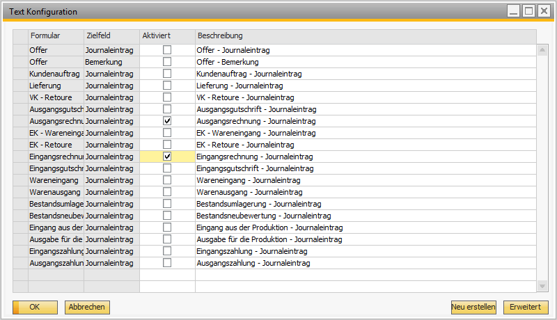
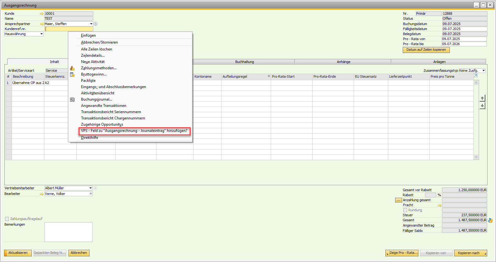
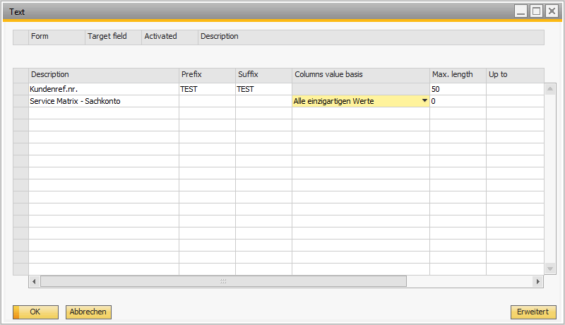
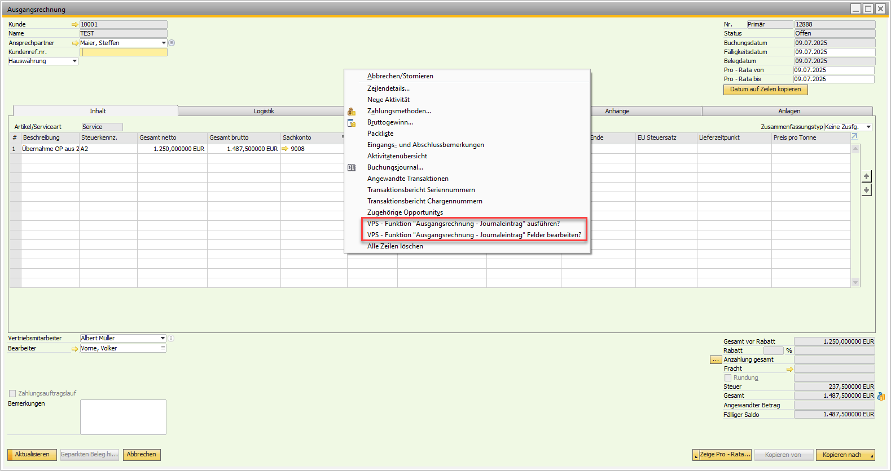

Posting Text Configurator (JE Text Setter)
Overview
The Versino JE Text Setter Module automates the creation of posting texts in SAP Business One. It automatically fills the text fields in numerous document types with predefined, meaningful descriptions. This saves time, reduces errors and ensures uniform, traceable posting texts. At the first start, a comprehensive default configuration is created which you only need to activate.
Module Access: The configuration is reachable via both VPS menu structures:
- Versino AddOn > Configuration > JE Text Configuration
- Versino Financial Suite > Configuration > JE Text Configuration
Important: Disabled by Default
At the first start, all configurations are disabled. You must first activate the desired document types before the automatic text generation works.
Main Features
Automatic & Context-Aware Text Creation
The module works in the background and automatically inserts matching posting texts when documents are created — without manual entry.
Direct Configuration from Documents (Right-click)
One of the strongest functions: directly from a SAP Business One document (e.g. an invoice) you can right-click on any text field to create a new rule for automatic text generation. The system automatically detects the form and the field, which significantly speeds up the setup.
Central Configuration Interface
Through a central management window you have full control. Here you can activate, deactivate, edit, copy or delete all rules for the various document types in a clearly arranged list. Via right-click in the configuration grid, the following functions are available:
- Delete row — Remove configuration immediately
- Copy row — Configuration is highlighted yellow and placed in the clipboard
- Paste row — Transfer the copied configuration to another row
Multilingual Text Creation
The system automatically detects the SAP Business One UI language and generates the texts in the corresponding language — perfect for international branches.
Supported Document Types
At the first start a default configuration is automatically created for the following document types:
Sales Documents
- Quotations (journal area and comment field)
- Sales orders
- Deliveries
- A/R invoices
- A/R returns
- A/R credit memos
Purchasing Documents
- Goods receipts ("EK - Goods Receipt")
- Purchase returns
- A/P invoices
- A/P credit memos
Inventory, Production and Payment Documents
- Inventory: Goods receipts, goods issues, inventory transfers, inventory revaluations
- Production: Production receipt, production issue
- Payments: Incoming payments, outgoing payments
Direct Field Configuration from Active Documents
By right-clicking on a text field, you can quickly create new configurations:
How the Direct Field Configuration Works
- Open any SAP Business One document (e.g. A/R invoice).
- Right-click on the text field that you want to fill automatically.
- The system automatically detects:
- The form type (e.g. A/R invoice)
- The selected text field
- The associated descriptions
- The JE Text configuration opens automatically with a pre-filled new rule.
- Activate and save the configuration.
Benefits: No manual entry of form IDs or field IDs required, immediate configuration directly at the workplace, automatic detection of all technical parameters.


Integration with Other VPS Modules
The JE Text Setter significantly improves the functionality of other modules through consistent texts:
VPS Pro-Rata
Pro-Rata accrual/deferral postings automatically receive meaningful texts that clearly identify the accrual/deferral period and the original document — e.g.:
- "Pro-Rata accrual March 2024 - Software License"
- "Release Pro-Rata April 2024 - Insurance"
- "Reversal Pro-Rata accrual - Invoice 2024-1234"
VPS DATEV Export
Uniform posting texts significantly improve the readability of the DATEV files. Texts are automatically adjusted to DATEV length limits and special characters are avoided — this reduces queries from your tax advisor and meets GoBD requirements.
VPS DATEV Import
When importing DATEV files, the JE Text Setter texts can serve as a reference for the assignment of posting types, which increases the import accuracy.
VPS Reporting
Standardized texts automatically appear in all reports — cash book, G/L statements, journal entry lists and Pro-Rata reports with clear accrual/deferral texts.
DATEV Integration in Detail
Cooperation with the DATEV system is particularly important for professional accounting:
Export Optimization
- Posting texts are generated in correct length for DATEV fields
- Automatic adaptation to DATEV character limits
- Avoidance of special characters that could cause DATEV problems
- Consistent terminology according to DATEV standards
Tax Advisor & Compliance
- Clear identification of posting types
- Reduced queries during DATEV handover
- GoBD-compliant posting texts
- Audit-trail-suitable descriptions
Application
After installation, the module is immediately available, but all rules are inactive by default. You must first activate the desired document types.
1. Activate a Rule for a Document Type (Basic Step)
- Navigate to Versino Financial Suite > Configuration > JE Text Configuration.
- Select in the list the desired document type (e.g. A/R invoices).
- Set the checkmark in the "Active" column.
- Save with "OK". The rule is now active.

2. Create a New Rule Directly from a Document (Recommended)
- Open any document in SAP Business One (e.g. an A/R invoice).
- Right-click on the text field that you would like to see in the posting text.
- Click on Add Journal Entry.
- The configuration window of the JE Text Setter opens and already has a new, pre-filled rule for this field added.
- The rules for automatic filling can be adjusted at any time with Edit Journal Entry.
- By clicking on Execute Journal Entry you can preview the posting text in advance in the Accounting tab.
- The text configurator will automatically adjust the posting text in the journal entry when the document is added.



Tips and Troubleshooting
Tips for Daily Work
- Introduce step by step: Start with a few important document types. Only activate the configurations you actually need.
- Use direct field configuration: Particularly useful for new forms — the automatic detection saves manual technical entries.
- Activate before Pro-Rata: Make sure the JE Text Setter is activated BEFORE you create Pro-Rata postings — otherwise the meaningful texts will be missing.
- Central management: Use the double-click function for fast editing. Use the copy function for similar configurations.
Common Problems and Solutions
Problem: No texts are inserted automatically.
Solution: First check in the configuration whether the rule for the relevant document type is activated (checkmark in the "Active" column).
Problem: The configuration list is empty when first opened.
Solution: The system automatically creates the default configurations at the very first start of the module. Contact support if in doubt.
Problem: The direct configuration via right-click does not work.
Solution: Make sure you clicked on a text field and that the JE Text Setter module is running correctly.
Problem: Texts are too long for the target field.
Solution: You can limit the maximum length of the texts in the text configurator per field. The maximum length for the posting text is 254 characters.
Problem: Texts appear in the wrong language.
Solution: Check the language settings in SAP Business One — the module automatically follows the UI language.
Problem: Pro-Rata postings have no descriptive texts.
Solution: Make sure the JE Text Setter was activated before the Pro-Rata posting creation.